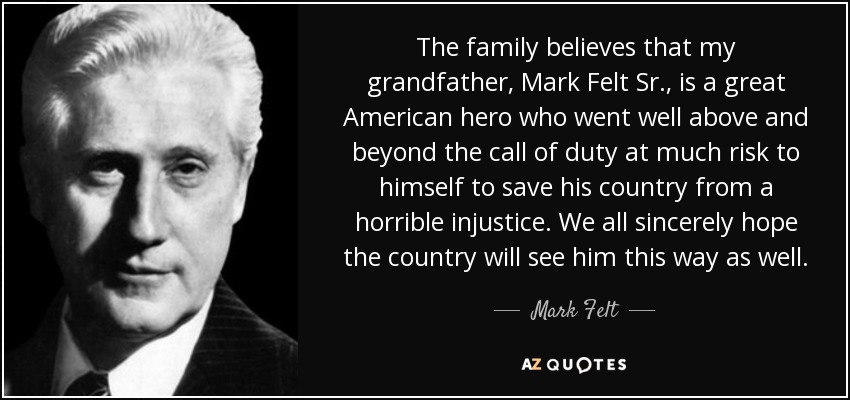
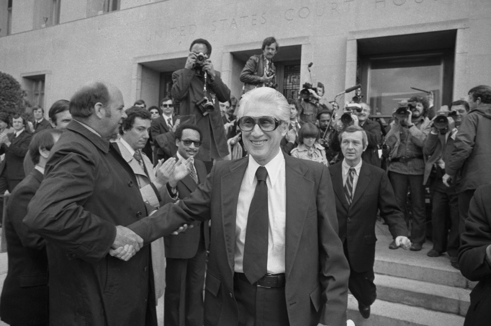
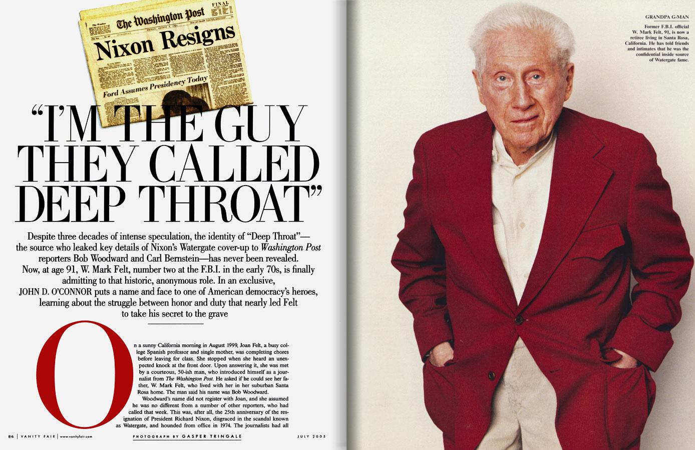
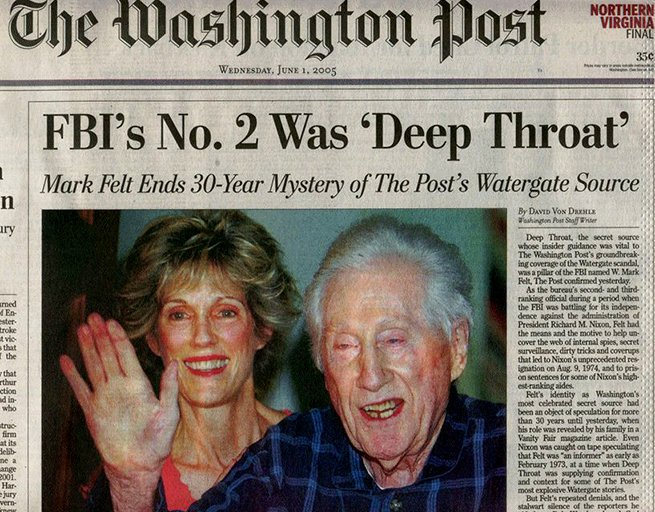

That response was incorrect!
It has just caused Nixon to remove you from office!
Mark Felt
A journey through the life of a warrior against his president, but for his country.

Story

As a lifelong FBI special agent, Mark Felt loved his country, and devoted his life to protecting it and its laws. However, his greatest, most heroic feat, came not as a G-man chasing down hardened criminals, but rather as Deputy Director of the FBI, violating laws for the greater good-to take down a corrupt president.
Childhood
Childhood = NULL
WaterGate Scandal
June 17, 1972 marks the beginning of a nationwide crisis. President Nixon wanted to make sure he was reelected and in order to secure his spot he sent 7 committee members to break into the Democratic National Committee’s Watergate headquarters and steal very important and to-secret documents while also bugging the office’s phones. However, they failed to bug the phones properly and on their mission to go fix and replace them, they were caught by a security guard who soon informed the police. The police traced the burglars back to Nixon but the people believed that Nixon was truly innocent and was reelected in November of 1972. However, people soon came to crack down on Nixon’s lies. Two reporters from the Washington Post, Judge John J. Sirica, and members of the Senate investigating committee all planned to expose the truth from Nixon. Soon after, some of the people working for Nixon admitted to recording conversations in the Oval Office but Nixon continued to refuse to give up the tapes. On October 20, 1973, the demand for the tapes did not end until Nixon the independent prosecutor asking for the tapes to be fired. This lead to other Justice Department officials resigning to protest Nixon’s decision. These series of events are referred to as the Saturday Night Massacre. In 1974, the whole story began to unfold and a new prosecutor was appointed. In July of that year, the Supreme Court ordered Nixon to hand over all the tapes and he was eventually impeached for obstruction of justice, abuse of power, criminal cover-up, and violations of the constitution. August 8 was the day when Nixon officially resigned after being found guilty. Some 6 weeks pass and Gerald Ford was elected as president and he convicted some of Nixon’s aids who were sent to federal prison while Nixon walked away free. The Watergate scandal highlights the distrust and dishonesty between the people and the government and why citizens are disappointed with the outcome of this country.
Felt and his Heroism
In June 1972, a group of burglars broke into the headquarters of the Democratic National Committee, hoping to steal documents that would help President Richard Nixon be reelected. The Nixon administration, and the President himself, conspired to obstruct the FBI's investigation into the break-in, to ensure that nobody would ever find out what they had done. However, Mark Felt continued to investigate, and determined that the administration was responsible for the break-in and cover up.Not knowing where to turn, and certain that the Justice Department would not prosecute Nixon because they were protecting him, Felt began leaking information of the coverup to Bob Woodward and Carl Bernstein, reporters who published the revelations in the Washington Post. These leaks were in direct violation of the Espionage Act, putting Felt in danger of prosecution, but nevertheless, he persisted. Even under the threat of going to jail, Felt didn't crumble, exposing the corruption of the Nixon administration. His actions eventually lead to the prosecution of Nixon's top aides, and the President's resignation.
Mark Felt is a true hero. He put himself in danger in order to do the right thing. He is a true modern day Antigone.
Trivia Game
Question 1
Question 2
Question 3
Question 4
Question 5
About
Editors

Amar Maksumic
Amar is a programmer that worked on incorporating CSS API's into the
Website and developing the code for the trivia game.
Xandria Crosland
Xandria is an expert researcher and an amazing creative writer.
Zeyad Shariff
Zeyad is an expert writer as he expresses depth within his writing, and
knows how to create questions in which complexity is expressed.
Krista Kawal
Krista is an artist that is phenomonial in the arts of layout. She
developed the mobile-friendly layout for the website.
Resources
Github
"GitHub is a development platform inspired by the way you work. From open
source to business, you can host and review code, manage projects, and build software alongside
millions of other developers." -Github
Semantic UI: React
"User Interface is the language of the web" -Semantic UI
Adobe Fireworks: CS6
"Fireworks provides web designers with a lightweight, effective means of
creating graphics for their web pages without getting deep into code or lost amid multiple color
palettes." -Adobe
THHSGit presents"Made for Mobile Series"